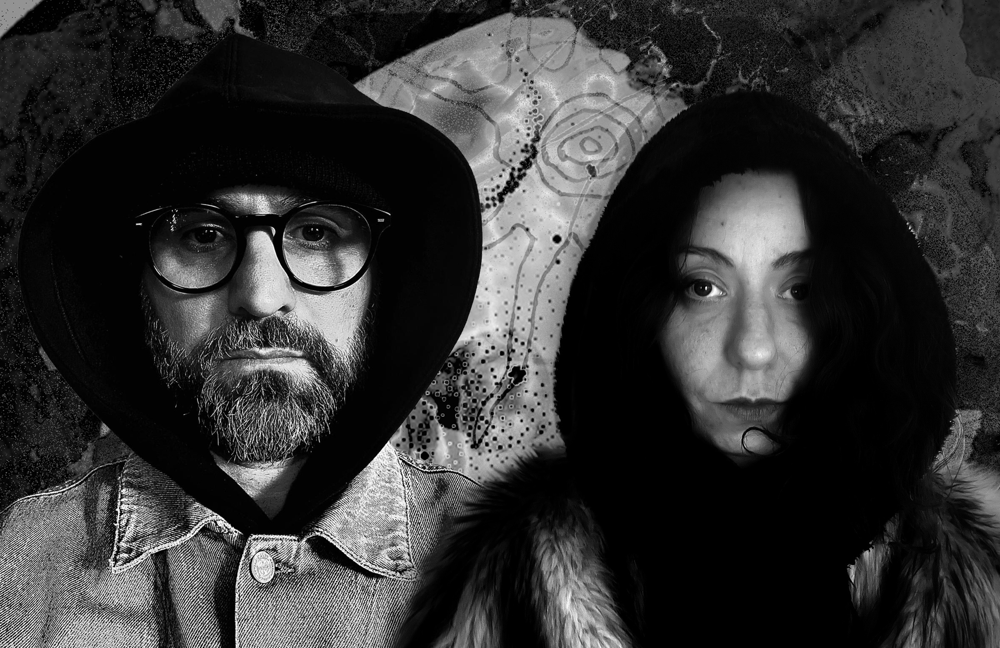

Cavallini/Nada
Giulia Cavallini works at the intersection of sound, the body, and presence. As a practitioner of sound healing, she brings gongs and singing bowls as vessels for vibration. She is a member of the Planetary Gong Ensemble.
Karlos Nada is an electronic producer with a restless curiosity and a highly developed ear for space and texture. His work draws on the fringes of ambient music and electronic composition.
Listen on Bandcamp